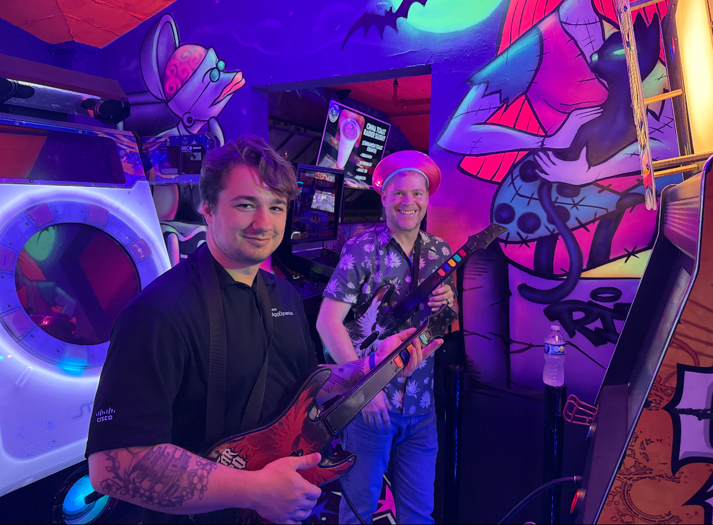

Hi,
I'm Devon (Biancarelli)#
Network Engineer
My Resume
About Me

I'm Devon
I'm a current Network Engineer at Yale University. I've been here close to 4 years and have used my time here to grow and develop my skills in both Enterprise Networking, and Cybersecurity.
Skills
Technical Skills
- Network Design & Architecture
- Routing & Switching (Cisco, Juniper)
- Wireless Networking (Wi-Fi, WLAN)
- Network Security & Firewalls (Palo Alto, ASA's)
- Cloud Networking (AWS, Azure)
- Linux & Windows Server Administration
- Scripting (Python & Groovy)
- Network Monitoring & Troubleshooting
- VLANs, VPNs, and Subnetting
- Version Control (Git & GitHub)
Soft Skills
- Teamwork
- Communication
- Problem Solving
- Time Management
Familiar With
- SD-Fabric
- Enterprise Networking
- Ansible
- Json / YAML
- Catalyst Center
- Identity Service Engine (ISE)
- ThousandEyes + LogicMonitor
Education
Work Experience
• Designed and maintained enterprise-wide Cisco ISE policies for secure access control, integrating multiple fabric sites and reducing unauthorized access incidents
• Configured and managed logging infrastructure with Graylog to support SIEM ingestion and real-time analysis, enabling faster incident response
• Collaborated in deploying and optimizing Palo Alto firewall rules and security zones, resulting in enhanced protection for high-value resources through effective threat mitigation
•Supported network modernization projects by testing, validating, and deploying hardware and software solutions, increasing network efficiency and reducing downtime
•Resolved escalated service-impacting issues across data centers and fabric-enabled sites, collaborating with teams to eliminate root causes
•Created and maintained diagrams and documentation for ISE policy changes and observability setups, improving team understanding and implementation accuracy
•Assisted in configuring and deploying F5 load balancers for ISE deployment, enhancing system reliability and traffic management
Network Engineer 1 Yale University Feb 2022 – Jan 2024
• Implemented automated configuration tools and scripts to streamline LAN switch provisioning, reducing manual tasks and error rates.
• Evaluated and tested a new Network Management System (NMS) to support Next-Generation Network (NGN) architecture, contributing to improved operational visibility.
• Monitored and analyzed traffic flow and device health using DNA Center and SNMP tools, which identified performance bottlenecks and enabled proactive remediation
• Resolved network support tickets and triaged performance issues, maintaining a high-resolution rate and user satisfaction.
Assisted with the documentation and enforcement of network policies and standards, supporting long-term operational stability.
• Met tight change deadlines by updating project tracking sheets in the team’s project management tool, ensuring network upgrades were completed on schedule and minimizing downtime
• Created a PowerShell script that generated a list of all site printers with their IP addresses, enabling quick ping tests and speeding up troubleshooting
• Performed Level/1 on-site and remote troubleshooting using VPN and StealthWatch, resolving user issues promptly and reducing ticket backlog
• Reengineered VBA macros that produced updated welcome sheets for new employees and interns, cutting preparation time and improving onboarding consistency
• Labeled and recorded every printer IP and model on site to save company money on printer ink/toner
• Set up workstations for incoming summer interns at the Trumbull site, installing Windows, required applications, and configuring VPN per manager requests, which allowed interns to begin work on day one
• Created documentation for Macros/PowerShell scripts for transfer of knowledge to future employees
• Created PowerShell scripts to automate user account provisioning and password resets, reducing manual effort for the IT team
• Troubleshot hardware and software problems on student workstations using remote tools and diagnostic logs, restoring functionality within the same workday
• Performed network configuration tasks, including VPN setup and firewall rule updates, as directed by the IT supervisor, improving remote access reliability
• Resolved and assigned service tickets in the ticketing system, prioritizing critical issues and ensuring timely follow up
• Tested internal hardware components with diagnostic tools, identified and resolved faults, preventing device downtime and ensuring reliable network performance
• Rebuilt Macs for MBI students by installing required software, configuring VPN and firewall settings, and delivering fully functional machines, meeting the department head’s specifications and improving student access to resources
Timeline
Graduated Naugatuck HighSchool
Graduated Top 50 in my class.
Began NVU HelpDesk Internship
Worked with CTO and helpdesk on handling tickets during the Spring semester
Began CooperSurgical Internship
Worked with Level 2 & 3 Technicians at solving issues with user created tickets
Graduated NVU
BS in Computer Information Systems, GPA: 3.86
Started at Yale University
Joined as a Network Engineer, working on campus-wide network upgrades and working on NGN.
Started Masters Degree at Quinnipiac
Began Masters Degree at Quinnipiac University in CyberSecurity
Promoted to Network Engineer Level 2
Recieved excellent feedback from management who decided to promote me to level 2
Guest Speaker at LogicMonitor Elevate Conference
Attended LogicMonior's Elevate conference in Austin Texas as a guest speaker for Yale University
Cisco Live 2026
Attended Cisco Live in 2025 in San Diego California